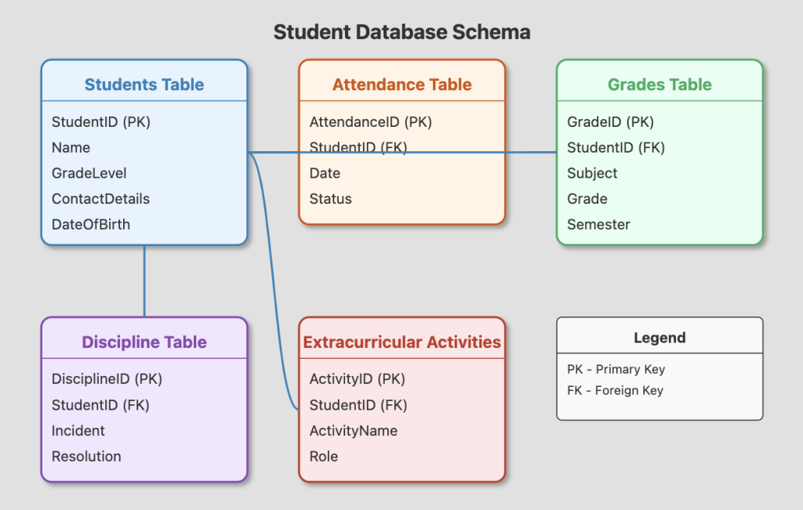

Go back to the main page
Databases
What is a database?
A database is a collection of data organised in a way that makes it easy for a computer program to search and store information.

Why use databases?
- Store large amounts of data while using little space.
- Easy to add, remove, and search for information.
- High security features like relational database(click for more information) prevent from inconsistent data as data in multiple tables is related and must be handled properly.
- Easy to integrate into other programs and use the data for purposes like data analysis.

Where are they used?
- Government - store people's income tax payments, criminal records, education for identification purposes.
- Schools - store details about studens like what days they have been absent, which subjects they are studying, their grades.
- Hospitals - store details about patients like history of their health issues.
- Online shops - store details about user's accounts like emails, passwords, products they buy.

Authored by Daniil
GIThub account